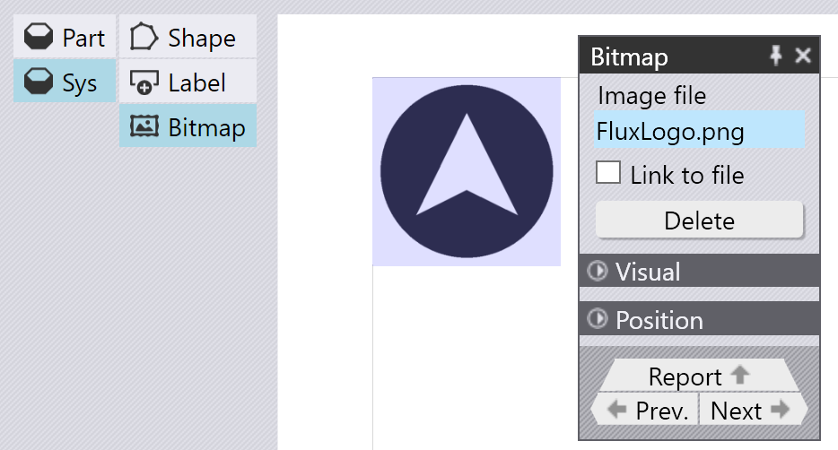

标签、位图和形状
除了来自零件的数据外，报告还可能需要其他一些装饰品 - 公司徽标、标准讯息和简单的几何图素，比如分隔线。这些是从系统数据源访问的。
插入位图
您可以通过选择“系统” > “位图”来添加位图（例如公司徽标）。选择任何图像文件，将其插入到报告中。然后可以根据需要调整大小或定位。如果您打开“指向文件的链接”，TecZone将只存储指向报告模板中图像文件的_链接_。否则，它将在报告模板中存储整个位图的副本。

插入形状
使用“系统” > “形状”选项在报告中插入一个简单的几何形状。您可以分别设置背景、填充和轮廓颜色，还可以控制形状的轮廓厚度。

除了这些简单的形状，您还可以插入更复杂的形状，方法是从从2D文件（如GEO、DXF或DWG）中读取它们。选择形状中的从文件选项，然后选择2D图纸文件。[1] 文件中的全部封闭轮廓被选中，并填充所选的填充颜色，且用所选笔划出轮廓。

从DXF和位图插入的这些形状通常用于类似的目的。但是，从DXF文件插入的形状是_矢量图像_，可以很好地缩放，甚至报告也以高分辨率打印。相反，位图则可能无法很好地缩放到高分辨率。
插入标签
添加字段或表格时，将自动插入标签。但是，您可以通过选择“系统” > “标签”来插入独立标签（或任何其他固定文本） 这些项目（位图、标签和形状）甚至可用于插入子报告或图素集。然后，它们将按照图素集渲染的次数进行重复。
1. 在形状插入后，不再需要DXF/GEO文件；从该文件导入封闭的轮廓并作为报告模板的一部分存储进行。